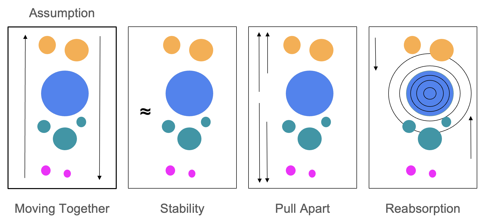

Characterizing non-linear patterns in range shifts through time
Species ranges are shifting in response to climate change. It is expected that species ranges will move poleward to track their climate envelope, but ranges are non-contiguous. Different edges of a range may shift in different ways and at different rates, creating non-linear patterns.

Non-linear dynamics dominate in tree species, but are largely stochastic
Using the Python package ecospat to identify the range edges of 83 North American tree species and their movement from the 1960s to 2025, we found that only 15.3% of species had expanded poleward, while the majority (58.3%) of species exhibited non-linear (i.e., pull-apart or reabsorption) dynamics. While stability versus movement was evolutionarily conserved, the types of movement was not. Further, movement types were not explained by differences in historical versus modern environmental variables, suggesting that range dynamics are largely stochastic.
While the majority of students only consider range shifts, expansions, or contractions, there many be other elements of a species range that matter, such as shape or patchiness 1. However, we are limited by human proclivities in what we consider important for range dynamics.
Using heterogenous graph neural networks to characterize temporal shifts in North American bird ranges
Harnessing the power of eBird occurrence data and AI, we are using heterogeneous graph neural networks (GNN), Neural Ordinary Differential Equations (NODEs), and the environmental, phylogenetic, temporal, and spatial relationships of 75 bird species with year-round ranges in Tennessee to: 1) learn what aspects of a range matter for spatial dynamics and characterize patterns of range movement through time and 2) create a continental-scale generative range environment from which fine-scale digital twins of areas important to Tennessee ecosystems will be instantiated and manipulated (e.g., population collapse, altered spatial connectivity, novel climates) to test hypotheses in silico and optimize management decisions in the real world.